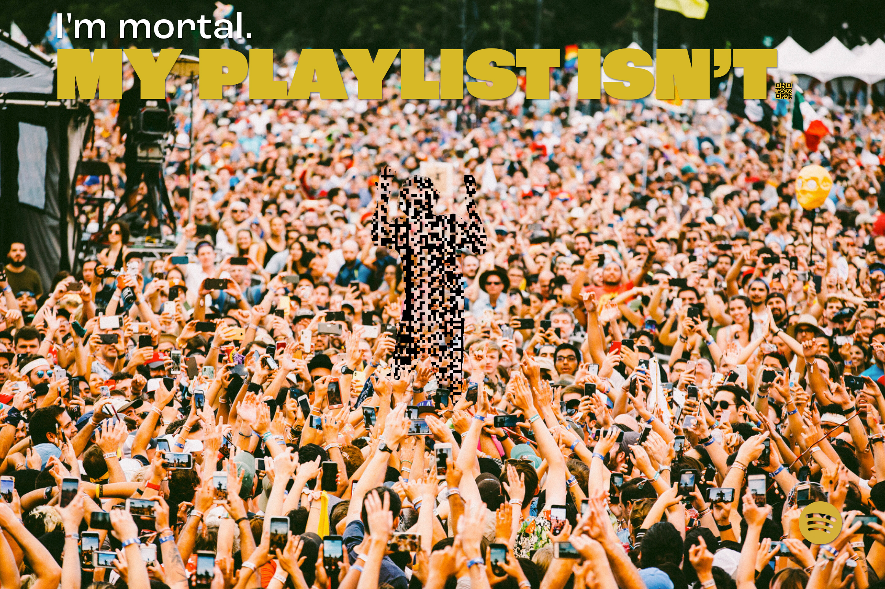
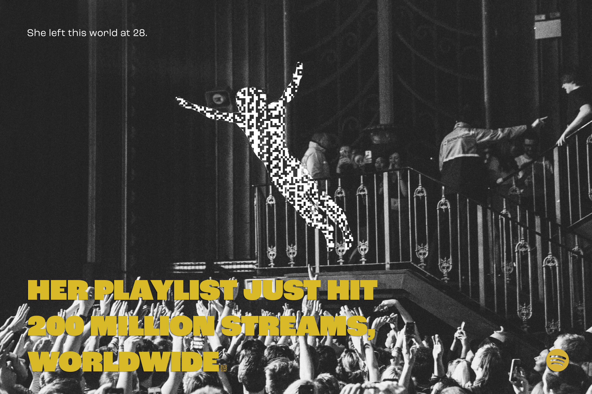
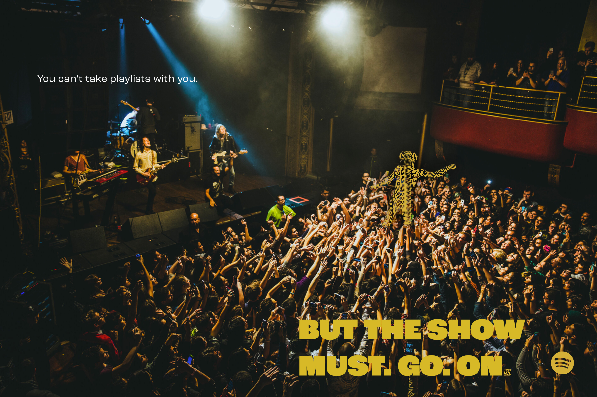
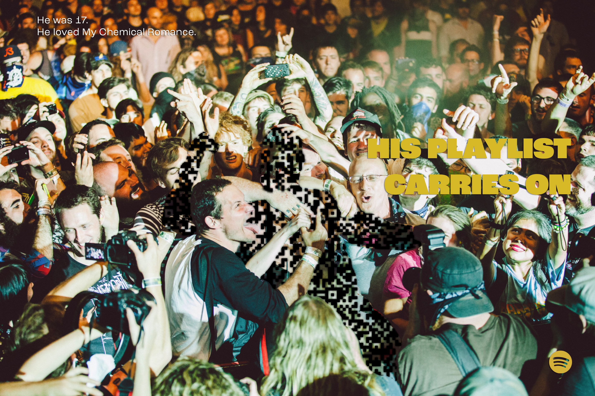
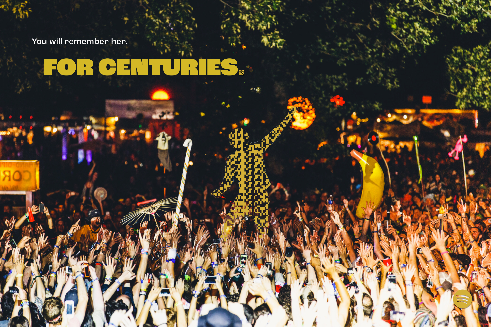
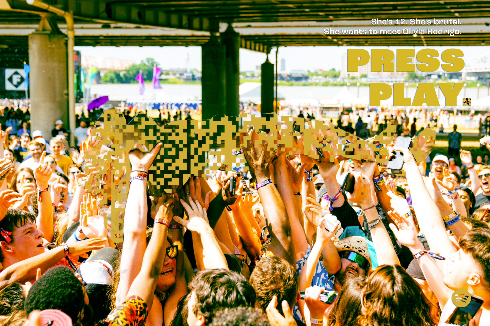
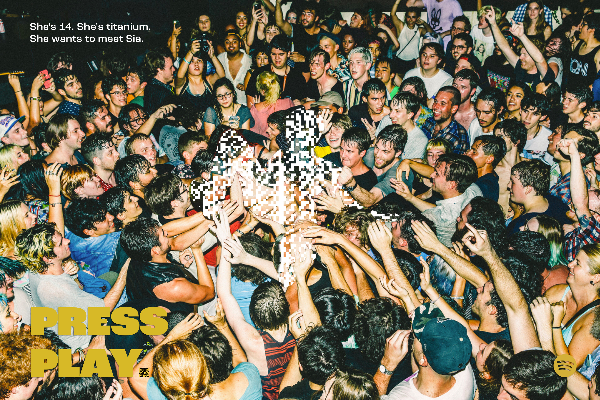
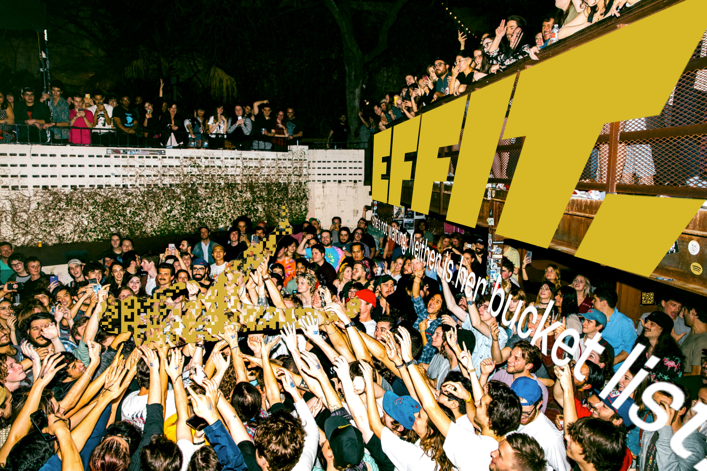
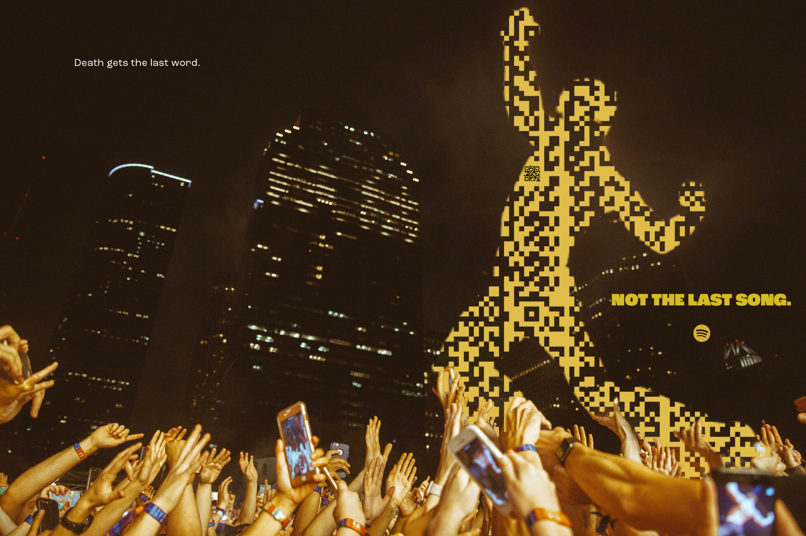
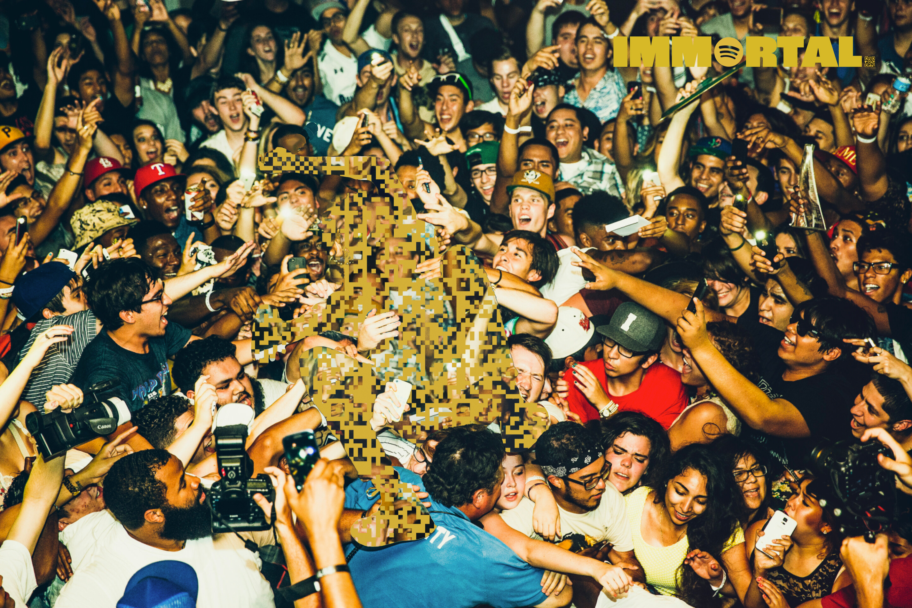

A Proactive Pitch
A Spotify Platform for Life and Legacy
Spotify has 713 million musical souls.
And no way to honor a single one.
Apple has Legacy Contacts.
Meta has Memorialization.
Google has Inactive Account Manager.
Spotify has nearly 9 billion playlists.
And no plan to preserve
a single one.
June 2025.
The CEO invested $700M in military AI.
Artists started leaving.
By December, boycotts are countering Wrapped.
Spotify has a death problem.
And not the kind they expected.
BUT DEATH
DOESN'T KILL
THE MUSIC.
Introducing
A celebration of life and music.
You spent your whole life building a playlist.
Every song, a bookmark.
Every track, a timestamp.
Every repeat, a confession.
This is not data.
This is a soul in shuffle mode.
And souls don't die.
They get archived.
713 million souls.
Nearly 9 billion playlists
between them.
Waiting to be remembered.
Not as ghosts. As givers.
Your friend loved Coldplay.
Now every stream of
"A Sky Full of Stars"
lights one.
Your mother loved Motown.
Now every play of
"Ain't No Mountain"
moves one.
Your kid brother screamed along to "Killing in the Name."
Now every stream does
what he told them.
And the kid in the hospital bed
who just wants to meet her favorite band?
Her playlist now funds
her bucket list into reality.
Not someday. Now.
This is Spotify Immortal.
Where the gone keep giving.
Where the fighting keep winning.
And the music never stops living with meaning.
I'm mortal.
You're mortal.
But what we love?
IMMORTAL
Two features. One platform.
Immortal Playlists
For those we've lost.
Bucket Playlists
For those still fighting.
Immortal Playlists
Users designate up to 3 charities in account settings.
Upon verified passing, public playlists become Immortal Playlists.
Streaming royalties flow to chosen charities in perpetuity.
Playlists marked with ∞ symbol, appear in dedicated Immortal section.
Default to MusiCares if no charities preselected.
Your photo. Your message. Your causes.
A playlist becomes a portrait of who you were.
Bucket Playlists
Partnership with Make‑A‑Wish Foundation.
Kids with life-threatening illnesses create playlists tied to their wishes.
Each stream generates funds toward their wish in real time.
Progress tracker shows proximity to dream.
Wishes documented and shared when granted.
The ecosystem grows.
Immortal Sessions
Annual benefit concerts featuring
artists from top playlists.
Wishes granted on stage. Livestreamed globally.
Immortal Wrapped
Annual impact report.
Charitable dollars generated.
Wishes granted. Community celebrated.
Hero Film
"A Sky Full of Stars"
Kayla fought brain tumors, spinal surgery, a rare blood disease.
When other sick kids picked "Fix You," she picked "A Sky Full of Stars."
Because it made her think of her loverboy and their dreamland.
She passed December 5, 2023.
She was 28.
Her 237-song playlist now funds:
Amanda Hope Rainbow Angels · HopeKids · Alex's Lemonade Stand
Bucket Playlist Film
"Dreams Don't Wait"
Luna is 11. She has leukemia.
She doesn't want sympathy.
She wants to meet Billie Eilish.
So she builds a playlist.
Her favorite songs.
Her fighting songs.
14 million strangers press play.
The progress bar fills. The door opens.
She gets her dream.
Everything she wanted.









The Cultural Footprint
The Immortal Grove
Picture Central Park. A forest of glowing trees.
Each tree is someone's playlist. Their spirit in music, echoing.
Directional speakers in the branches. Headphones beneath.
Strangers gathering under a stranger's soul.
New York. Then London. Tokyo. São Paulo.
Every Listen Keeps Them Alive
T-shirts at the memorial. Programs at the service.
A QR code on an urn. A message on a headstone.
Not a logo. A last word from the one you lost.
"I may be gone.
But my show goes on forever."
THIS IS WHAT
REMEMBERING
SOUNDS LIKE.
Headlines We Earn
"Spotify Immortal Turns Your Playlist
Into a Charitable Legacy" — GMA
"11-Year-Old Got Everything She Wanted —
Thanks to 14M Strangers" — People
"The Most Meaningful Product Launch
in Streaming History" — Wired
Headlines We Earn
"How Spotify Turned Death Into Its
Most Life-Affirming Moment" — Fast Company
"Massive Attack Returns to Spotify — On an Immortal
Playlist for Humanitarian Relief" — Pitchfork
"The Artists Who Left Are Coming Back.
Here's Why." — Billboard
The Proof That Matters
Immortal Playlists created in year one.
Charitable dollars generated through streams.
Wishes granted through Bucket Playlists.
Artists who return to the platform.
Policy discussions on digital legacy rights.
Not impressions.
Impact.
This isn't a campaign.
It's what platforms owe their users.
A way to honor the full arc of a life.
When Spotify does this,
others follow.
The industry changes.
Why Now
Boycotts are countering Wrapped.
19+ artists have pulled their catalogs.
The brand is at a crossroads.
Damage control won't work. Transformation will.
This is how Spotify answers
the death problem
with a life platform.

IMMORTAL
A Spotify celebration of life and music.
∞
A proactive pitch by
Omar Silwany
Creative Director & Writer